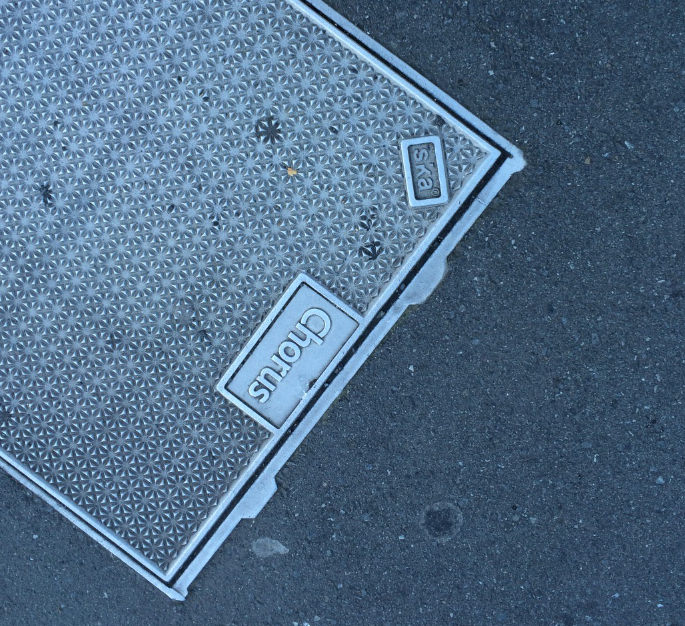

Networks of Wellington street
In the city of wellington, the Networks infrastructures is all around the street. Even we using them and walk through them everyday, is still hard to noticed them. This is a page that a part of networks infrastructures on the street of Wellington.

This is the meanings of differethe color street marking meanings in Wellington from a cable locate marking canpany in Wellington city.
The Manhole Covers
Some Manhole covers connected with Networks of the city,and these networks are belong to some Network company.
s

This manwhole cover is made by Transnet Nz Ltd. Transnet Nz Limited was founded in 2000. The company is sale the distribution of electrical apparatus and equipment wiring supplies in New Zealand.

Chorus is a provider of telecommunications infrastructure throughout New Zealand. This Company listed on the NZX stock exchange and is in the NZX 50 Index. Chorus is the owner of the majority of telephone lines and exchange equipment in New Zealand.